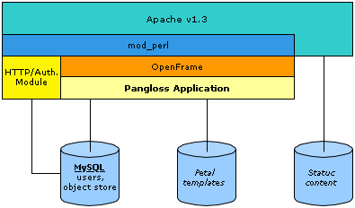

An overview of the system architecture of Pangloss is shown in Figure 1.
Fig. 1: Pangloss Architecture

This includes:
- Perl v5.8
- Apache 1.3.x / mod_perl 1.x
- OpenFrame 3.x
- MySQL backend
- Petal templates
- HTTP/mod_perl authentication
Though Pangloss will be developed in Apache/mod_perl 1, support for
Apache 2.x / mod_perl 2 is desirable.
Compatibility with MKDoc users will be supported through the MKDoc
HTTP/mod_perl authentication module.
Pangloss will be developed and tested under Linux and Mac OS X using CVS for
version control. The target platform is Linux. Support for other platforms
including Win32 and other flavours of Unix is desirable but not required.
Localization of Pangloss (ie: support for multi-lingual templates, errors,
and messages) is also desirable but not required.
This section details the
controller of Pangloss - it is effectively
a high-level overview of Pangloss' logic flow. It's based on the idea of
Pipeline
Segments
(so hopefully there will be a 1:1 mapping), and assumes
it is running in OpenFrame
(ie: there is an OpenFrame::Request in the store, etc..). Each
segment will be minimalistic in that most of the work will be done by
the model, as outlined in
section 3. In saying that,
it is worth noting that templates will be chosen by the controller so that
the model does not have to concern itself with presentation logic.
For each request, Pangloss will execute the following:
-
Loaders
Load Session()
-
Decline User Exists
Load User( remote user )
Load Selected Filters( ... )
Load Selected User( username )
Load Selected Concept( concept name)
Load Selected Term( term name )
Load Selected Language( language name )
Load Text Document( text | blob )
Load Html Document( URI )
-
Login
Decline No User
Login( username, password ) probably not needed?
-
Generate Glossary
-
Decline No Filters
Generate Glossary( filters )
-
Decline No Document
Generate Glossary From Text( text doc )
Generate Glossary From Html( html doc )
-
Administer Terms
Decline No Term
-
Decline Not Translator
Decline Term Exists
Add Term( concept, language, new term, notes )
-
Decline Not Proofreader
Modify Term Status( term, new status, notes )
-
Decline Not Administrator
Modify Term( term, ... )
Delete Term( term )
-
Administer Users
Decline No User Selected
-
Decline Not Administrator
Decline Term Exists
Add User( name, type )
Modify User( user, ... )
Delete User( user ) does not *really* delete user
-
Administer Concepts
Decline No Concept
-
Decline Not Administrator
Decline Concept Exists
Add New Concept( name, description )
Modify Concept( concept, ... )
Delete Concept( concept ) deletes associated terms too
-
Administer Languages
Decline No Language
Add New Language( name, iso code )
Modify User( language, ... )
Delete Language( language ) deletes associated concepts + terms too
- Load Filter Options()
-
Process Template
Decline No Template
Add Messages To Template()
Add Errors To Template()
Load Template()